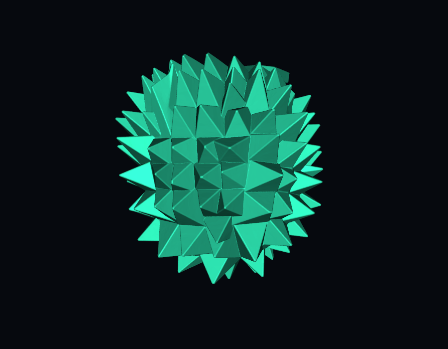

LIVE MARKET FEED // SIMULATED
01
Mega Feed Handler
↗Low-latency market-data plumbing: replay order-by-order feeds over UDP multicast, rebuild price levels, and recover dropped packets with sequenced retransmission.
CS + Math at Penn. I build low-latency systems, machine-learning tools, and interactive software — usually in C++, Python, TypeScript, or CUDA.

I’m interested in the line where performance, systems design, and useful interfaces meet. That’s led me from market-data transport and ML-from-scratch work to GPU-accelerated neuroscience tooling.
My favorite projects have a hard constraint somewhere: latency, throughput, messy real-world data, or a UI that has to make something complicated immediately understandable.
Low-latency market-data plumbing: replay order-by-order feeds over UDP multicast, rebuild price levels, and recover dropped packets with sequenced retransmission.
An end-to-end ML pipeline built largely from scratch, including neural nets, evolutionary training, backpropagation, momentum, and boosted trees.
A visual, interactive way to watch neural networks learn instead of treating training as a black box.
A Python UI framework built around tabs and dockable panels — a small component system for tools that need flexible workspaces.